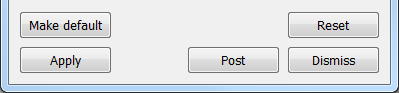

1.3. The Main Window¶
VisIt’s Main window, shown in Figure 1.4, contains three main areas: the file area, the plot area and the notepad area. The file area contains controls for working with sources and selecting the current time state. The plot area contains controls for creating and modifying plots and operators. The notepad area is a region where frequently used windows may be posted for quick and convenient access.

Fig. 1.4 VisIt’s Main window
1.3.1. Posting a window¶
Each time a window posts to the notepad area, a new tab is created in the notepad and the posted window’s contents are added to the new tab. Clicking on a tab in the notebook displays a posted window so that it can be used.
Fig. 1.5 An unposted and posted window
Postable windows have a Post button to post the window. Clicking on the Post button hides the window and adds its controls to a new tab in the notepad area. Posting windows allows you to have several windows active at the same time without cluttering the screen. When a window is posted, its Post button turns to an UnPost button that, when clicked, removes the posted window from the Notepad area and displays the window in its own window. Figure 1.5 shows an example of a window with a Post button and also shows the same window when it is posted to the notepad area.
1.3.2. Using the main menu¶
VisIt’s Main menu contains seven menu options that allow you to access many of VisIt’s most useful features. Each menu option displays a submenu when you click it. The options in the submenus perform an action such as saving an image. Menu options that contain a name followed by ellipsis open another VisIt window. Some menu options have keyboard shortcuts that activate windows. The File menu contains options that deal with files and simulations. The Controls menu contains options that open VisIt windows that, for the most part, set the look and feel of VisIt’s visualization windows. The Options menu contains options that allow you to set the appearance of the GUI, manage host profiles, manage VisIt plugins, set various preferences and save VisIt’s settings to a configuration file. The Windows menu contains controls that manage visualization windows. The PlotAtts and OpAtts menus allow access for setting the attributes of all the plots and operators. The Help menu provides options for viewing online help, VisIt’s copyright agreement, and release notes which describe the major enhancements and fixes in each new version of VisIt. The options for each menu except for the plot and operator attribute menus are shown in Figure 1.6 and will be described in detail later in this manual.

Fig. 1.6 VisIt’s main menus
The Main menu and the Plots and Operators menus are merged in the OSX version of VisIt because OSX applications always have all menus in the system menu along the top of the display.
1.3.3. Viewing status messages¶
VisIt informs the user of its progress as it creates a visualization. As work is completed, status messages are displayed in the bottom of the Main window in the status bar. In addition to status messages, VisIt sometimes displays error or warning messages. These messages are displayed in the Output window, shown in Figure 1.7. To open the Output window, click the Output indicator in the lower, right hand corner of the Main window. When the Output window contains an unread message, the Output indicator changes colors from blue to red.

Fig. 1.7 The output window and output indicator
1.3.4. Applying settings¶
When using one of VisIt’s control windows, you must click the Apply button for the new settings to take effect. All control windows have an Apply button in the lower left corner of the window. By default, new settings are not applied until the Apply button is clicked because it is more efficient to make several changes and then apply them at once. VisIt has a mode called Auto apply that makes all changes in settings take place immediately. Auto apply is not enabled by default because it can cause plots to be regenerated each time settings change and for the database sizes for which VisIt is designed, auto apply may not always make sense. If you prefer to have new settings apply immediately, you can enable auto apply by clicking on the Auto apply check box in the upper, right hand corner of the Main window. If Auto apply is enabled, you do not have to click the Apply button to apply changes.
Fig. 1.8 The Apply button and Auto apply check box